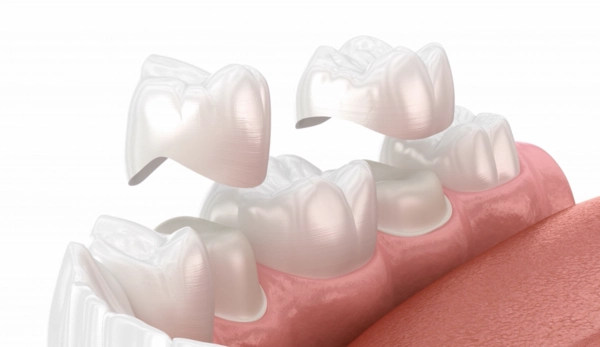
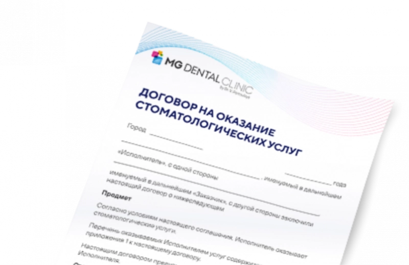

Наша выдающаяся команда врачей обеспечивает профессиональное и внимательное лечение.
С высокой квалификацией, постоянным обучением и эффективным сотрудничеством, мы гарантируем высокое качество обслуживания.

Профессионально восстановим зубной ряд с помощью коронок из диоксида циркония
с гарантией качества
Необходимо проводить протезирование зубов как можно раньше после их утраты во избежание негативных последствий:

Это постоянные протезы, изготовленные из диоксида циркония (ZrO2). Они отличаются от металлокерамики своим натуральным белым оттенком и умеренной прозрачностью, что делает их визуально привлекательными. Важно отметить, что циркониевые коронки обладают высокой прочностью, не уступая металлическим сплавам, и превосходят керамические конструкции в этом аспекте.
Процедура протезирования зубов с использованием подобных коронок направлена на восстановление их целостности и функциональности при жевании. Стоматолог-ортопед занимается созданием и установкой специальных протезов для замещения утраченных зубов.
Стаж хирургической деятельности 17 лет. Имеет опыт работы с 67 имплантационными системами. Стаж преподавательской деятельности 10 лет. Провел больше 1.000 учебных лекций и конгрессов в России и заграницей.
Окончил с отличием Волгоградский Государственный Медицинский Университет в 2008 г. Ординатура по челюстно-лицевой хирургии на базе ЦНИИС и ЧЛХ, г. Москва 2009-2011.
Имеет международную ученую степень PhD. Автор патентов на изобретения и полезную модель. Автор статей в рецензируемых журналах.
Куда Вам удобней отправить?
Наша выдающаяся команда врачей обеспечивает профессиональное и внимательное лечение.
С высокой квалификацией, постоянным обучением и эффективным сотрудничеством, мы гарантируем высокое качество обслуживания.


Важно помнить, что абсолютные противопоказания категорически исключают возможность выполнения процедуры.
Не откладывайте ваше здоровье на потом и обратитесь к профессионалам для получения индивидуальной консультации и рекомендаций.

На первом приеме проводится диагностика пациента. Врач-ортопед осмотрит челюсть пациента.
Если врач обнаружит патологии, он направит на лечение к терапевтическому стоматологу для немедленного устранения проблем.
Лечение, включающее в себя обработку воспаленных десен, удаление кариеса и другие процедуры, проводится по необходимости. При необходимости может потребоваться рентгенография, депульпирование и пломбирование.
Если зуб слишком поврежден для установки циркониевой коронки, его удаляют. Затем проводится имплантация и установка ортопедической конструкции.
Чтобы надежно закрепить коронку из циркония на опорном зубе, требуется слегка обточить его. Для этого удаляется от 0,4 до 0,6 мм поверхностного слоя зуба. Эта процедура безопасна и практически безболезненна. Для пациентов, испытывающих гиперчувствительность, может потребоваться местная анестезия.
Протезирование осуществляется с использованием инновационной технологии CAD/CAM. Слепок зуба снимается в трех плоскостях, затем на компьютере создается точная компьютерная 3D-модель будущего протеза. Этот процесс занимает всего несколько минут. Для предотвращения повреждений на препарированный зуб доктор временно установит композитную коронку.
Протез изготавливается из циркониевой заготовки на специальном фрезерном оборудовании в зуботехнической лаборатории. Станок создает точную копию поврежденного зуба. Затем циркониевая коронка подвергается «усадке» при высокой температуре и давлении. На последнем этапе выполняется шлифовка и полировка.
Завершающий этап включает примерку циркониевой коронки и ее окончательную фиксацию на опорном зубе или импланте. Благодаря изготовлению коронки из циркония на основе компьютерной модели, он практически всегда точно подходит на свое место. В случае успешной примерки конструкция фиксируется окончательно. Если выявляются дефекты, они исправляются на месте или протез отправляется обратно в лабораторию для доработки.
Получите официальную брошюру, в которой подробно объясняется, как работает швейцарский протокол GBT
Превосходства циркониевых коронок на зубы заключаются в их уникальных характеристиках, которые делают их предпочтительными по сравнению с другими материалами:
Циркониевые коронки на зубы превосходят по эстетике металлокерамические конструкции. Металл может просвечиваться через другие материалы, придавая зубу сероватый оттенок.
Несмотря на свою высокую эстетичность, циркониевые коронки обладают прочностью, сопоставимой с металлическими конструкциями. Они на 30% прочнее керамических аналогов, что позволяет использовать их не только для передних, но и для жевательных зубов.
Циркониевые коронки на зубы рекомендуются для пациентов с различными проблемами ротовой полости, включая курильщиков и аллергиков, благодаря своей высокой биосовместимости.
Цирконий термически устойчив. Антибактериальные свойства циркония способствуют защите зубов от вторичного кариеса. Это особенно важно в контексте современных тенденций в стоматологии, когда предварительное удаление пульпы проводится не всегда.
Циркониевые коронки на зубы значительно легче металлических аналогов, что снижает нагрузку на опорный зуб и пародонт. Их меньшая толщина позволяет более эффективно сохранять натуральные ткани.
Благодаря использованию передовых цифровых технологий, современных методов и инновационных подходов, MIR Dental Clinic by Dr. V. Pantsulaya имеет возможность предложить эффективные решения имплантации даже в самых сложных случаях: критическая атрофия костной ткани, пародонтальная болезнь или другие медицинские особые состояния.
Не откладывайте заботу о своем здоровье на потом! Оставьте заявку на консультацию прямо сейчас, чтобы наши специалисты могли помочь вам вернуть вашу уверенную улыбку и здоровье
Она останется неизменной, даже если курс доллара внезапно вырастет.
Смотреть пример договора
№ Л041-01137-77/01033518
Выдана 26.01.2024 департаментом
здравоохранения города Москвы
ИНН: 9703154096
ОГРН/ОГРНИП: 1237700576300
Выбирая клинику MIR Dental Clinic by Dr. V. Pantsulaya, вы выбираете качественные стоматологические услуги в заботливой и профессиональной обстановке.
MIR Dental Clinic by Dr. V. Pantsulaya предоставляет полный спектр стоматологических услуг, от комплексной диагностики до хирургии.
Заботьтесь о своем здоровье вместе с MIR Dental Clinic by Dr. V. Pantsulaya - местом, где начинается ваша красивая улыбка!
которая позволяет пациентам получать инновационное и эффективное лечение в области имплантации
Мы используем передовое стоматологическое оборудование, что позволяет нам предоставлять эффективные и современные услуги
MIR Dental Clinic by Dr. V. Pantsulaya - клиника с рейтингом 5.0, более 100+ отзывами и оценками на Яндексе . Мы ежедневно подтверждаем свой профессионализм и высокое качество услуг!
Понимая уникальные потребности каждого пациента, мы предлагаем визуализированный план лечения, имплантации и протезирования
Высококвалифицированные стоматологи с большим стажем работы и мед. персонал обеспечивают высокий уровень экспертизы и заботы о каждом пациенте
Мы создаем дружелюбную и уютную атмосферу в нашем центре, чтобы сделать ваш визит комфортным. В нашей клинике применяется технология Patient Care - поддержка пациентов на всех этапах лечения.
Только честные отзывы и вы легко можете убедиться в этом! Изучите стоматологические рейтинги на авторитетных интернет-ресурсах, прочтите отзывы на социальных интернет-справочниках и посмотрите видео отзывы наших довольных пациентов. Это поможет вам получить максимально полную информацию о наших услугах и сервисе от реальных людей, которые уже воспользовались нашими услугами.
Задайте его нам или запишитесь на бесплатную консультацию
В нашей клинике созданы все условия для комфорта и удобства пациентов: современное оборудование, чистота, уютный интерьер, комфортная зона ожидания, внимательный персонал и профессиональная атмосфера, что позволяет вам чувствовать себя безопасно и уверенно.
В MIR Dental Clinic by Dr. V. Pantsulaya мы предлагаем не только высококачественные имплантологические процедуры, но и широкий спектр других стоматологических услуг. Наша команда опытных специалистов готова помочь вам с любыми потребностями по уходу за вашими зубами и полостью рта. Подробнее о каждой услуге и стоимости лечения вы можете ознакомиться на страницах сайта: